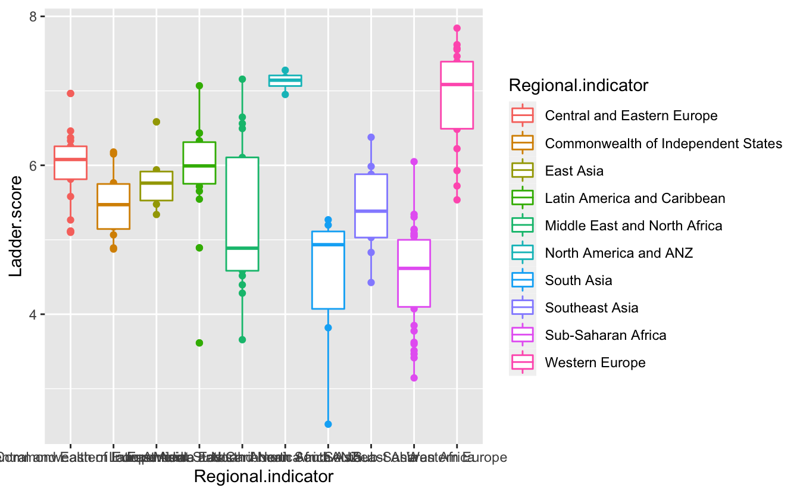
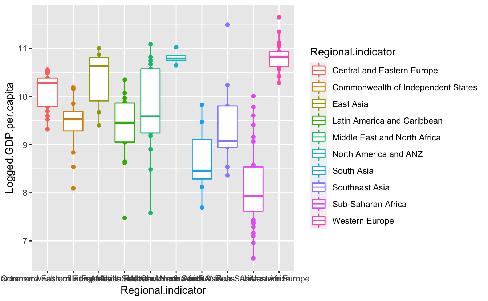

This is my PM566 Final Project website. I will showcase a few interactive visuals here.
(Your output should look something like this)
World Happiness Report 2021 use data that come from the Gallup World Poll surveys from 2018 to 2020. They are based on answers to the main life evaluation question asked in the poll. This is called the Cantril ladder: it asks respondents to think of a ladder, with the best possible life for them being a 10, and the worst possible life being a 0. They are then asked to rate their own current lives on that 0 to 10 scale. The rankings are from nationally representative samples, for the years 2018-2020. They are based entirely on the survey scores, using the Gallup weights to make the estimates representative.
the data concludes main variable that is Ladder.score, leading to the core index of people happiness. There are other six variables that researchers put into data frame: Logged.GDP.per.capita: means logged GDP every captical Social.support: the quality of social support Healthy.life.expectancy: healthy or not Freedom.to.make.life.choices: people’s feeling on freedom to make life choice Generosity: the quality of being kind and generous. Perceptions.of.corruption: the perceptions of corruption
And we want to illustrates data storytelling with the World Happiness Report (2021) data. Also we want to know what variable is related to people happiness from perspective of country.
First I will source any necessary code, e.g. process_covid_data.R:
#read the data
happy_2021<-read.csv("world-happiness-report-2021.csv")Then I will add some code to create the plotly figures
#briefly check the data
head(happy_2021)## Country.name Regional.indicator Ladder.score Standard.error.of.ladder.score
## 1 Finland Western Europe 7.842 0.032
## 2 Denmark Western Europe 7.620 0.035
## 3 Switzerland Western Europe 7.571 0.036
## 4 Iceland Western Europe 7.554 0.059
## 5 Netherlands Western Europe 7.464 0.027
## 6 Norway Western Europe 7.392 0.035
## upperwhisker lowerwhisker Logged.GDP.per.capita Social.support
## 1 7.904 7.780 10.775 0.954
## 2 7.687 7.552 10.933 0.954
## 3 7.643 7.500 11.117 0.942
## 4 7.670 7.438 10.878 0.983
## 5 7.518 7.410 10.932 0.942
## 6 7.462 7.323 11.053 0.954
## Healthy.life.expectancy Freedom.to.make.life.choices Generosity
## 1 72.0 0.949 -0.098
## 2 72.7 0.946 0.030
## 3 74.4 0.919 0.025
## 4 73.0 0.955 0.160
## 5 72.4 0.913 0.175
## 6 73.3 0.960 0.093
## Perceptions.of.corruption Ladder.score.in.Dystopia
## 1 0.186 2.43
## 2 0.179 2.43
## 3 0.292 2.43
## 4 0.673 2.43
## 5 0.338 2.43
## 6 0.270 2.43
## Explained.by..Log.GDP.per.capita Explained.by..Social.support
## 1 1.446 1.106
## 2 1.502 1.108
## 3 1.566 1.079
## 4 1.482 1.172
## 5 1.501 1.079
## 6 1.543 1.108
## Explained.by..Healthy.life.expectancy
## 1 0.741
## 2 0.763
## 3 0.816
## 4 0.772
## 5 0.753
## 6 0.782
## Explained.by..Freedom.to.make.life.choices Explained.by..Generosity
## 1 0.691 0.124
## 2 0.686 0.208
## 3 0.653 0.204
## 4 0.698 0.293
## 5 0.647 0.302
## 6 0.703 0.249
## Explained.by..Perceptions.of.corruption Dystopia...residual
## 1 0.481 3.253
## 2 0.485 2.868
## 3 0.413 2.839
## 4 0.170 2.967
## 5 0.384 2.798
## 6 0.427 2.580describe(happy_2021)## vars n mean sd median trimmed
## Country.name* 1 149 75.00 43.16 75.00 75.00
## Regional.indicator* 2 149 6.06 3.15 6.00 6.19
## Ladder.score 3 149 5.53 1.07 5.53 5.54
## Standard.error.of.ladder.score 4 149 0.06 0.02 0.05 0.06
## upperwhisker 5 149 5.65 1.05 5.62 5.66
## lowerwhisker 6 149 5.42 1.09 5.41 5.43
## Logged.GDP.per.capita 7 149 9.43 1.16 9.57 9.48
## Social.support 8 149 0.81 0.11 0.83 0.83
## Healthy.life.expectancy 9 149 64.99 6.76 66.60 65.40
## Freedom.to.make.life.choices 10 149 0.79 0.11 0.80 0.80
## Generosity 11 149 -0.02 0.15 -0.04 -0.03
## Perceptions.of.corruption 12 149 0.73 0.18 0.78 0.76
## Ladder.score.in.Dystopia 13 149 2.43 0.00 2.43 2.43
## Explained.by..Log.GDP.per.capita 14 149 0.98 0.40 1.02 0.99
## Explained.by..Social.support 15 149 0.79 0.26 0.83 0.82
## Explained.by..Healthy.life.expectancy 16 149 0.52 0.21 0.57 0.53
## Explained.by..Freedom.to.make.life.choices 17 149 0.50 0.14 0.51 0.51
## Explained.by..Generosity 18 149 0.18 0.10 0.16 0.17
## Explained.by..Perceptions.of.corruption 19 149 0.14 0.11 0.10 0.12
## Dystopia...residual 20 149 2.43 0.54 2.51 2.46
## mad min max range skew
## Country.name* 54.86 1.00 149.00 148.00 0.00
## Regional.indicator* 4.45 1.00 10.00 9.00 -0.24
## Ladder.score 1.04 2.52 7.84 5.32 -0.10
## Standard.error.of.ladder.score 0.02 0.03 0.17 0.15 1.85
## upperwhisker 1.02 2.60 7.90 5.31 -0.11
## lowerwhisker 1.06 2.45 7.78 5.33 -0.09
## Logged.GDP.per.capita 1.46 6.64 11.65 5.01 -0.34
## Social.support 0.11 0.46 0.98 0.52 -0.92
## Healthy.life.expectancy 6.83 48.48 76.95 28.48 -0.51
## Freedom.to.make.life.choices 0.12 0.38 0.97 0.59 -0.74
## Generosity 0.15 -0.29 0.54 0.83 0.99
## Perceptions.of.corruption 0.12 0.08 0.94 0.86 -1.55
## Ladder.score.in.Dystopia 0.00 2.43 2.43 0.00 -Inf
## Explained.by..Log.GDP.per.capita 0.51 0.00 1.75 1.75 -0.34
## Explained.by..Social.support 0.25 0.00 1.17 1.17 -0.92
## Explained.by..Healthy.life.expectancy 0.21 0.00 0.90 0.90 -0.51
## Explained.by..Freedom.to.make.life.choices 0.14 0.00 0.72 0.72 -0.74
## Explained.by..Generosity 0.10 0.00 0.54 0.54 0.99
## Explained.by..Perceptions.of.corruption 0.07 0.00 0.55 0.55 1.55
## Dystopia...residual 0.48 0.65 3.48 2.83 -0.55
## kurtosis se
## Country.name* -1.22 3.54
## Regional.indicator* -1.42 0.26
## Ladder.score -0.43 0.09
## Standard.error.of.ladder.score 5.96 0.00
## upperwhisker -0.40 0.09
## lowerwhisker -0.45 0.09
## Logged.GDP.per.capita -0.86 0.09
## Social.support 0.30 0.01
## Healthy.life.expectancy -0.62 0.55
## Freedom.to.make.life.choices 0.31 0.01
## Generosity 1.48 0.01
## Perceptions.of.corruption 2.07 0.01
## Ladder.score.in.Dystopia NaN 0.00
## Explained.by..Log.GDP.per.capita -0.86 0.03
## Explained.by..Social.support 0.30 0.02
## Explained.by..Healthy.life.expectancy -0.62 0.02
## Explained.by..Freedom.to.make.life.choices 0.32 0.01
## Explained.by..Generosity 1.48 0.01
## Explained.by..Perceptions.of.corruption 2.07 0.01
## Dystopia...residual 0.35 0.04# see the distribution of people happiness
p1_scatter<-
happy_2021%>%
ggplot(aes(x=Regional.indicator,y=Ladder.score,color=Regional.indicator))+
geom_point()+
geom_boxplot()p2_scatter<-
# see the distribution of GDP
happy_2021%>%
ggplot(aes(x=Regional.indicator,y=Logged.GDP.per.capita,color=Regional.indicator))+
geom_point()+
geom_boxplot()Create tabs to display each figure
p1_scatter
p2_scatter